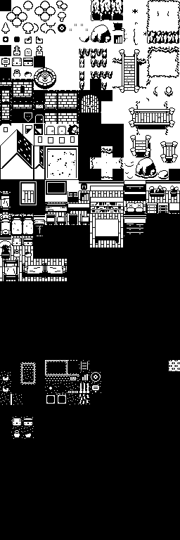
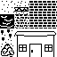
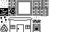
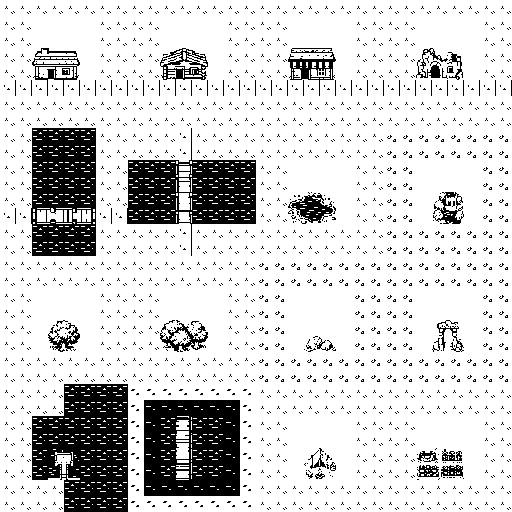

Main environment atlas
Installed game source
The main authored environment sheet referenced by fxsprites.toml. It contains terrain, buildings, interiors, objects, and unused lower-sheet space.
Installed tile sheets, preserved redraws, and the new environment atlas and tilemaps. The preview is artwork for review; it has not replaced the installed tile IDs.

The main authored environment sheet referenced by fxsprites.toml. It contains terrain, buildings, interiors, objects, and unused lower-sheet space.

The palette is black, 85-gray, 170-gray and white. This archived atlas is the visual reference for the black-and-white redraw.

Redrawn from the four-shade reference with distinct grass, water, paths, rock, trees and buildings. Compare at 1×, 2× or 4× with tile boundaries. The previous 724×2172 preview did not respect native sizing. This export has native dimensions; source tile alignment and seams still require review before installation.

Broad white forms, bold black cutouts and sparse detail drawn from the actual creature sprites. The previous clarity redraw is preserved. Compare both variants at native size. Per-tile alignment and seams require review before installation.

Small companion sheet for world objects and interactive fixtures.

Compact companion atlas referenced alongside the main environment sheet.
Eight environments, four buildings and four interiors. Open the interactive map viewer for native zoom, tile boundaries and individual environment areas.

Meadow, woodland, coast, marsh, mountain, snow, village and ruins. Props use white backgrounds; bridges, water fixtures, larger trees and buildings are included in the same sheet. Compare the earlier detailed version.
Eight environment areas assembled from the new atlas. Editable Tiled map.
Cottage room, shop, ruined shrine and crystal cave. Editable Tiled map.

The active overworld uses a 256×256 tile grid with 16×16 pixel cells. These authored map files are listed here for inspection; the new map previews above are separate review layouts.
maps/world_map.tmx · 256×256 tiles.
maps/world_map.json · authored JSON export.
maps/testInside.tmx · 8×8 tiles.